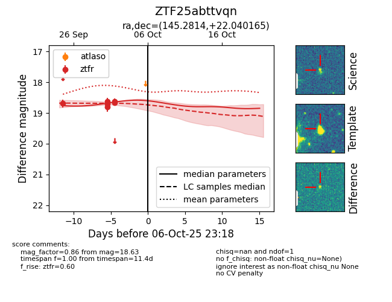
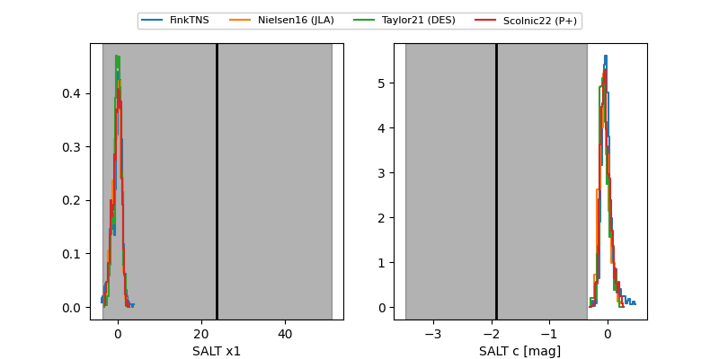

FINK: ZTF25abttvqn
Lasair: ZTF25abttvqn
ALeRCE: ZTF25abttvqn
ZTF25abttvqn (ztf,fink)
equatorial (ra, dec) = (145.2814,+22.04016)
galactic (l, b) = (208.8481,+46.68632)


last ztfr=18.63
6 ztfr detections